Carne de carnicería
Nuestras hamburguesas empiezan con carne fresca de una carnicería de confianza. Nada de discos congelados: bolas de carne preparadas cada día.
Hamburguesería en Benidorm INSERT COIN
Smash burgers en el centro de Benidorm con doble carne de carnicería, pan de obrador y patatas caseras incluidas. Ven a comer a nuestro local arcade inspirado en Pac-Man o pide tus hamburguesas a domicilio.
READY!
LEVEL 01
Pac-Smash Burger es una hamburguesería de smash burgers en Benidorm que nació con una idea muy simple: hacer las hamburguesas que a nosotros nos gustaría comer y servirlas en un sitio que recuerde a los salones recreativos de los 80 y los 90.
Por eso trabajamos con carne de una carnicería de confianza, pan de obrador y salsas y patatas caseras. Y por eso nuestro restaurante temático está lleno de neones de fantasmas, con un Game Over que ilumina la sala, juegos de mesa y una máquina recreativa siempre encendida.
Nos encontrarás en Carrer de l'Alt, 2, en el centro de Benidorm, con la entrada junto al hotel. Es un rincón algo escondido que ya es parada obligatoria para quien busca dónde comer hamburguesas en Benidorm.
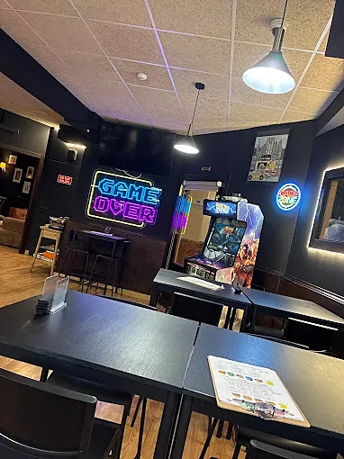
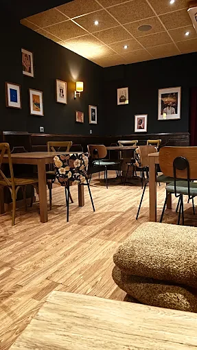
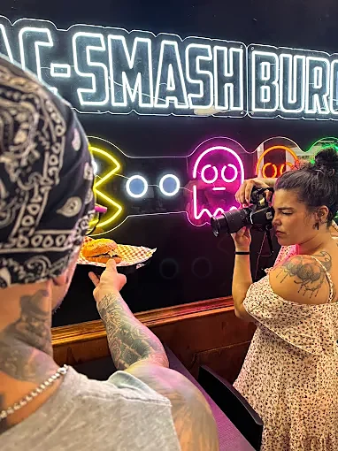
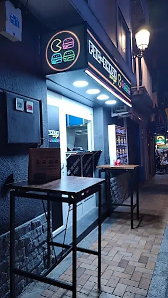
LEVEL 02
Elige a tu jugador: siete hamburguesas con doble carne smash y patatas caseras incluidas, desde 10,50 €. Todas se pueden pedir en versión vegana. Pasa el ratón por las que tienen foto.
PAC-SMASHburger
PATATAS
INCLUIDAS
Doble carne smash, doble queso cheddar.
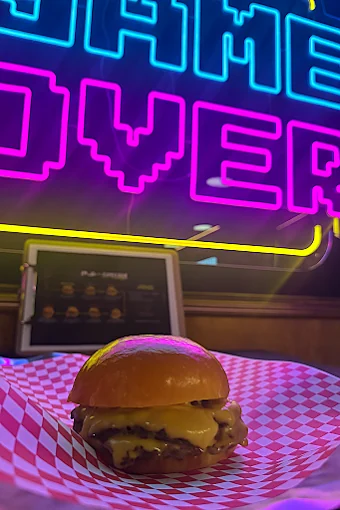
Doble carne smash, doble queso cheddar, lechuga, cebolla, tomate y mayonesa.
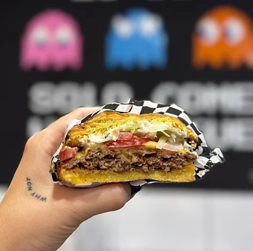
Doble carne smash, doble queso cheddar, bacon y pepinillo picado con salsa Queen.
Doble carne smash, queso brie, cebolla caramelizada y mermelada de fresa.
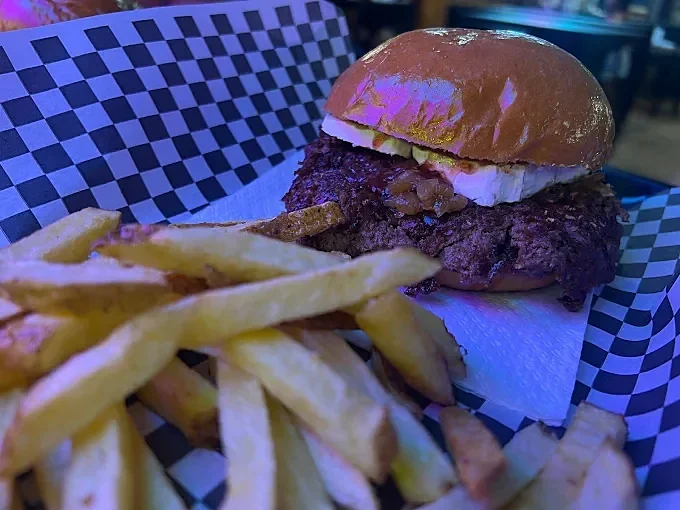
Doble carne smash, queso gouda, cebolla caramelizada, champiñones y salsa trufa.
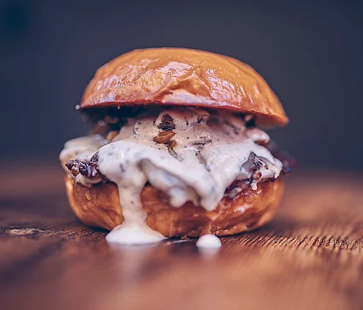
Doble carne smash, doble queso cheddar, bacon y salsa Lotus.
Doble carne smash, doble queso cheddar, panceta y salsa pistacho.
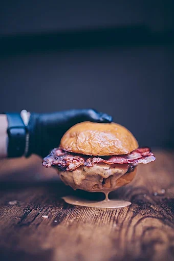
Precios de entrantes y postres caseros, en el local.
OPCIÓN CARNE
180 GR
OPCIÓN VEGANA
EN TODAS LAS BURGERS
BONUS STAGE
En Pac-Man los bonus eran cerezas y fresas. Aquí son hamburguesas caseras. Arrastra para ver la galería.
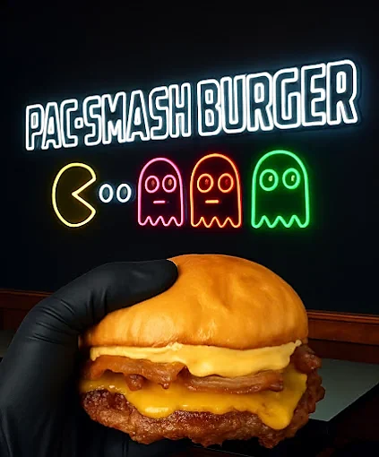
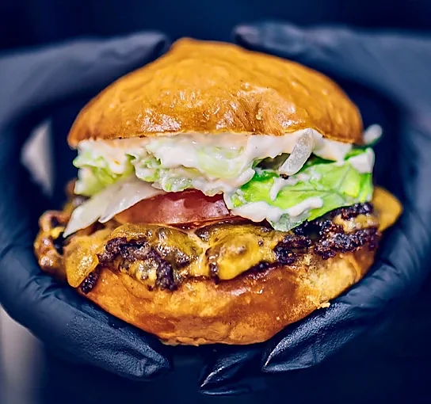
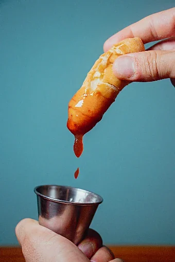
01/08Pac-Smash
LEVEL 03
Cinco pantallas y cero atajos: así preparamos cada smash burger en nuestra cocina de Benidorm. Sigue a Pac-Man.
Nuestras hamburguesas empiezan con carne fresca de una carnicería de confianza. Nada de discos congelados: bolas de carne preparadas cada día.
Aplastamos la bola contra la plancha muy caliente. Así nace la smash burger: costra tostada y crujiente en los bordes y carne jugosa por dentro.
Cada hamburguesa lleva dos carnes smash. El queso se funde encima en la propia plancha, justo antes de montarla.
Pan brioche de obrador tostado y salsas caseras: trufa, pistacho, Lotus o Queen. Combinaciones dulces y saladas difíciles de encontrar en otra hamburguesería de Benidorm.
Patatas fritas caseras, cortadas y fritas al momento. Van incluidas con todas las hamburguesas, sin suplementos. Y si te sobra tiempo, la recreativa te espera.
CONTINUE? 9
Hamburguesas nuevas, especiales de temporada y lo que pasa detrás del neón de Pac-Smash Burger. Todo lo contamos en @pacsmashburger.
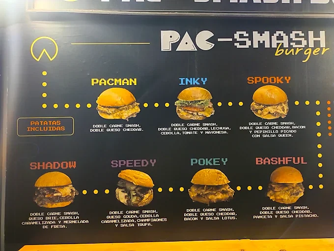
VER EN INSTAGRAMHIGH SCORES
Un sitio recomendable para comer y echar unas partidas a juegos de mesa o en la recreativa que tienen al Street Fighter o al OutRun. Salu2 desde Salamanca.
Hamburguesas smash muy ricas, patatas caseras y los tequeños de Nutella son de pecado. Para rematar jugamos unas partidas en la máquina retro.
Sobre todo la Speedy con champiñones y salsa de trufa. Nos gustó tanto que en nuestra visita a Benidorm terminamos yendo unas 3 veces.
Una burger de pollo crujiente buenísima, la chica supersimpática y atenta, el sitio muy original inspirado en el juego Pac-Man.
Trato súper agradable, buena música, las hamburguesas bestiales. Y encima una máquina arcade con el God of War… Vamos, épico.
¡Parada obligatoria en Benidorm! Hamburguesas y patatas artesanales con productos que se nota que son de calidad.
Se notaba la alta calidad de la carne y el pan brioche, y las patatas eran caseras. Tienen juegos de mesa para los peques y no tan peques.
De las mejores hamburguesas que he comido nunca. Decoración original, comida riquísima y atención increíble.
Probamos la Spooky y la Shadow y de postre unos tequeños de Nutella. ¡Volveremos para seguir probando todas sus smash!
Excelente atención, ambiente muy agradable y las hamburguesas buenísimas. Un plus que ofrezcan la opción vegana.
Se han convertido en mis favoritas. Se nota la calidad de los productos en cada bocado, y el trato del personal es insuperable.
Vine con las expectativas muy altas y empezaron a cumplirse en el momento en que entré por la puerta. Volveré cada vez que venga a Benidorm.
GAME OVER · ¿OTRA PARTIDA?
Estamos en Carrer de l'Alt, 2, en el centro de Benidorm. Ven a comer a la hamburguesería, pide para recoger por Instagram o recibe tus smash burgers a domicilio con Uber Eats y Glovo.
DIRECCIÓN
Carrer de l'Alt, 2
03501 Benidorm, Alicante
Entrada junto al hotel
HORARIO
| Lun – Mié | 12:00 – 16:00 · 19:30 – 23:00 |
|---|---|
| Jue – Dom | 12:00 – 16:00 · 19:30 – 23:30 |
TELÉFONO
Estamos en Carrer de l'Alt, 2 (03501 Benidorm, Alicante), en el centro de Benidorm. La entrada está junto al hotel.
Abrimos todos los días de 12:00 a 16:00 y de 19:30 a 23:00. De jueves a domingo cerramos a las 23:30.
Sí. Todas nuestras smash burgers llevan patatas caseras incluidas, y los precios van de 10,50 € a 12,50 €.
Sí. Todas las hamburguesas de la carta se pueden pedir en versión vegana.
Sí. Puedes pedir a domicilio por Uber Eats o Glovo, y para recoger nos puedes escribir por Instagram (@pacsmashburger).